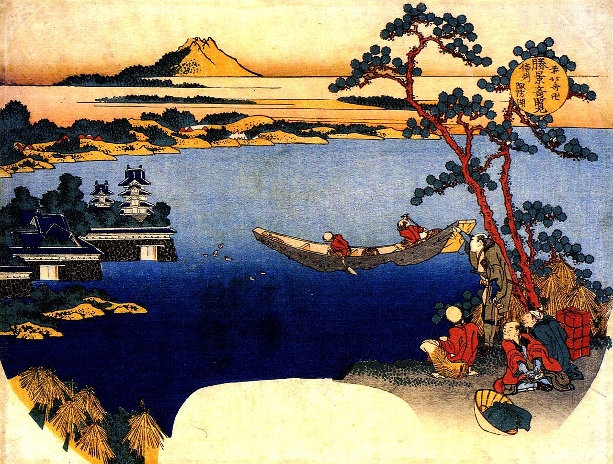

Hokusai is arguably Japan's most famous artist. He is known for images like the wave (next slide).
Hokusai lived from 1760-1849 and produced stunning woodblock prints like this one.
Katsushika Hokusai enjoyed portraying nature and folklore. This gloomy artpiece of a waterfall is an example of that.
Hokusai copied and improved on his predecessors; Japanese art had been steadily progressing for roughly a century before Hokusai arrived on the scene.
Works like the one we see above are typical for the artsyle of early (and general) Japanese woodblock prints.

The Japanese had learned geometry and portrayal of space from the Dutch. The Dutch' presence in Japan (presumably) had great influence on the country, hence it is called Rangaku (Dutch Studies).